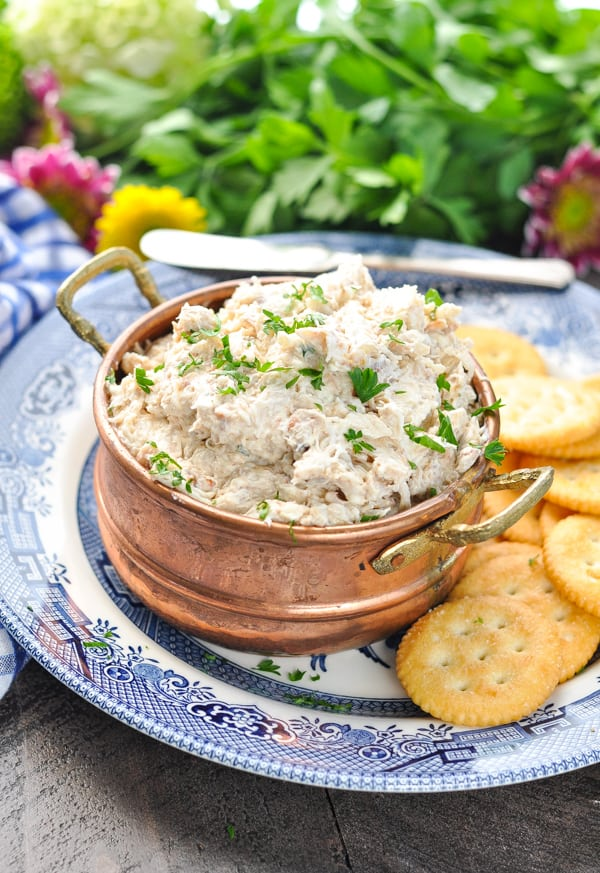

Homepage
Crab Dip

This dip is perfect for football sundays and with entertainment crackers is sure to be a hit at any gathering!
Ingredients
- 8 ounce cream cheese
- 1/4 cup mayonnaise
- 1/4 cup sour cream
- 2 cloves garlic
- 1/4 cup chopped green onion
- 1 1/2 tsp old bay
- 1/2 tsp salt
- 1 tsp worchestershire sauce
- 1/2 lemon juice
- 1 cup chedder cheese
- 1/2 tsp hotsauce
- 1 pound crab meat
Instructions
- Preheat oven to 350
- Combine all ingredients int a bowl
- Spread into a baking dish pan
- Sprinke top with chedder cheese
- Cook until top is golden brown approx. 20 minutes